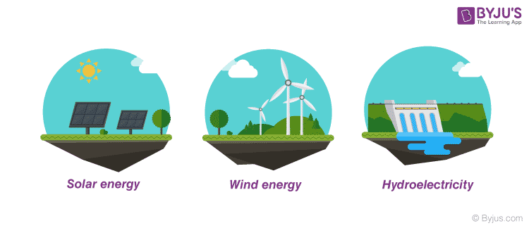

Sources Of Renewable Energy :-
The sources could sustain for a longer period of time and can easily be renewed often. Sustainable sources are biomass, nuclear power, geothermal, wind energy, solar power, tidal power, and wave power.

The sources of renewable energy are known to be less polluting and therefore the whole world is looking forward to new carbon emission norms, where carbon will play a major role in developing new factories and industries. They will be rated according to the carbon emission and the products that they are producing will be rated accordingly.
Next